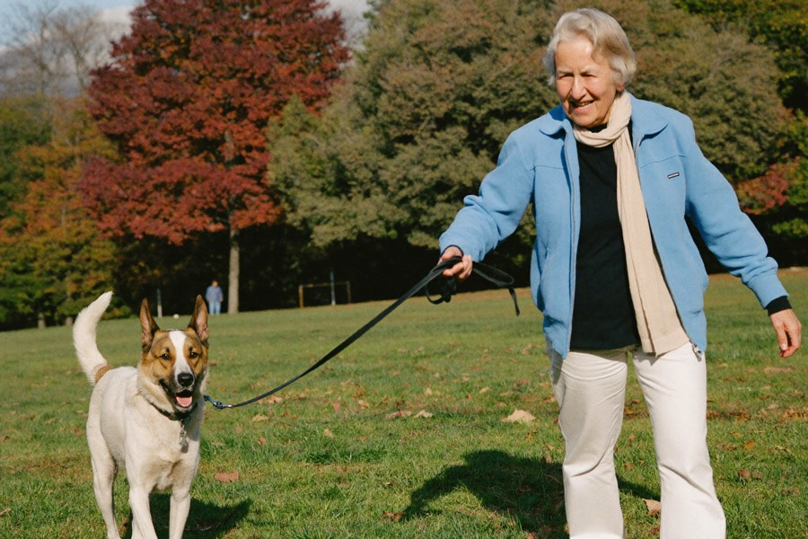
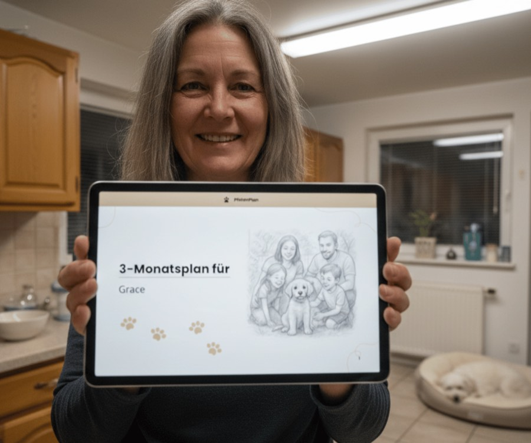

3 błędy, które popełnia niemal każdy właściciel psa, i dlaczego przez nie Twój pies Cię nie słucha
Ciągnięcie na smyczy, szczekanie, brak przywołania czy stres przy każdym spotkaniu: najczęściej to nie wina psa. Właścicielka psa z naszej redakcji opowiada o trzech najczęstszych błędach, i o tym, co zamiast tego naprawdę pomaga.
 Autorka: Lena Kowalska · redakcja Psiego Magazynu · 3 dni temu · 7 min czytania
Autorka: Lena Kowalska · redakcja Psiego Magazynu · 3 dni temu · 7 min czytania
Wtedy u Nery chodziło o smycz. Spokojny spacer, dopóki na końcu ulicy nie pojawił się inny pies, a moja kochana, przytulna Nera w kilka sekund zmieniała się w szczekający, ciągnący kłębek, którego ledwo mogłam utrzymać. Przepraszałam, czerwona na twarzy, wołałam za innymi właścicielami „On nic nie zrobi!", wracałam do domu i płakałam.
Próbowałam wszystkiego, co się czyta. YouTube w górę i w dół. Trzy różne poradniki. Jedna droga godzina z trenerem, po której było lepiej dokładnie dwa dni, a potem znowu od nowa. I w końcu, w jeden z tych wieczorów, zadałam sobie pytanie: Czy to naprawdę musi być takie drogie i takie skomplikowane? Czy nie ma prostszej, jaśniejszej drogi, która pasuje właśnie do mojego psa, a nie do jakiegoś psa pokazowego z internetu?
To pytanie mnie nie opuściło. I doprowadziło mnie do trzech wniosków, które dziś wyjaśniają niemal wszystko, co idzie nie tak między psem a człowiekiem. Nie jesteś w tym sama, a Twój pies nie jest „źle wychowany". Prawie każdy popełnia te same trzy błędy, nawet o tym nie wiedząc.
Błąd 1, 2 i 3, które popełnia prawie każdy

Czy któraś z tych sytuacji jest Ci znajoma?
Może u Was wcale nie chodzi o smycz, tylko o coś zupełnie innego. Przeczytaj to spokojnie, założę się, że przynajmniej jeden z tych momentów od razu Ci coś przypomni:
Choć wygląda to tak różnie, prawie zawsze stoi za tym jeden z trzech błędów z góry. I to jest właściwie dobra wiadomość: skoro przyczyna jest ta sama, to i rozwiązanie, jasny plan, który pasuje właśnie do Twojego psa i prowadzi Cię krok po kroku.
Gdzie leży problem u Twojego psa?
Zrób bezpłatny 60-sekundowy test. Od razu dostaniesz ocenę sytuacji i zobaczysz, jak wyglądałby Twój osobisty plan.
ZRÓB TEST DLA PSABezpłatnie · 60 sekund · wynik od razuCo mówią właściciele
„Miałam za sobą trzy poradniki i byłam bez planu. Osobisty plan wreszcie wprowadził strukturę, teraz przy każdym kroku wiem, co jest do zrobienia, a Rocky od razu to czuje."

„Wreszcie z żoną ciągniemy w tę samą stronę. Balu reaguje zupełnie inaczej, odkąd oboje robimy to samo, to był dla nas przełom."

„Mam 63 lata i szczerze byłam o krok od poddania się. Dziś udaje się tyle rzeczy, o których myślałam, że już nigdy się ich nie nauczy. Ten plan oddał nam obu kawałek codzienności, wciąż nie mogę w to uwierzyć."
Właśnie tego wtedy szukałam: ŁapaPlan
To, czego mi wtedy brakowało, to nie był nowy cudowny trik, tylko plan pasujący właśnie do mojego psa. I dokładnie tym jest ŁapaPlan. Odpowiadasz na kilka krótkich pytań o rasę, wiek i zachowanie, a na tej podstawie powstaje osobisty plan treningowy, tydzień po tygodniu, z konkretnymi ćwiczeniami, w Twoim tempie, z domu.

- Indywidualnie, nie schematycznie: dopasowany do rasy, wieku i konkretnego problemu Twojego psa.
- Opracowany przez prawdziwych trenerów, wyjaśniony zrozumiale, krok po kroku.
- W formie PDF do wydruku, do kieszeni albo pod ręką w telefonie.
- Jednorazowa płatność zamiast drogich lekcji, bez zobowiązującego abonamentu.
A najważniejsze: nigdy nie jesteś z tym sama
To, co przy wszystkich filmikach z YouTube przeszkadzało mi najbardziej: gdy miałam pytanie, nie było nikogo. Właśnie to w ŁapaPlan jest inaczej.
Dwie drogi, gdy utkniesz
Jak dojść do swojego planu
Wyobraź sobie na chwilę, jak to jest: wychodzisz z psem i nie musisz już przy każdym rogu wstrzymywać oddechu. Mówisz jedno słowo, a on słucha. Bez ciągnięcia, bez szczekania, bez wyrzutów sumienia, po prostu wy dwoje, spokojnie, tak jak dziś ja z Nerą. Ten moment jest znacznie bliżej, niż Ci się teraz wydaje, i zaczyna się od jednej małej decyzji.
Sprawdź, co Was hamuje
Krótki test pokaże Ci, który z trzech błędów stoi u Twojego psa na drodze, i jak wyglądałby Twój osobisty plan.
ZRÓB BEZPŁATNY TEST DLA PSA →W 60 sekund do osobistej ocenyBez zobowiązującego abonamentu · opracowane przez prawdziwych trenerów